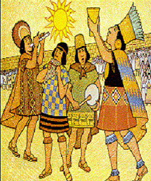
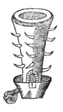

Los incas tuvieron varias Manifestaciones, entre ellas hay 5 muy importantes
A. Religión. La religión estuvo constantemente presente en todos los ámbitos de las labores incaicas.
En las leyendas de formación del imperio incaico, se percibe una marcada diferencia sexual entre hombre y mujer.
Eran politeístas (es decir creían en varios dioses), destacando el culto al "Dios Sol".
B. Cosmovisión. Según la mitología incaica, existían tres mundos diferentes, los cuales habían sido creados por el
dios incaico Viracocha (también conocido como Wiracocha o Huiracocha).
Los 3 mundos eran los siguientes
Hanan PachaKay PachaUku Pacha
C. Arquitectura.
La arquitectura incaica se caracteriza por la sencillez de sus formas, su solidez, su simetría y
por buscar que sus construcciones armonicen el paisaje. A diferencia de sociedades costeñas como
la chimú, los incas utilizaron una decoración bastante sobria.
El principal material utilizado fue la piedra. En las construcciones más simples era colocada
sin tallar, no así en las más complejas e importantes. Los constructores incaicos desarrollaron
técnicas para levantar muros enormes, verdaderos mosaicos Formados por bloques de piedra tallada
que encajaban perfectamente, sin que entre ellos pudiera pasar ni un alfiler. Muchas veces esos
bloques eran tan grandes que resulta difícil imaginar su colocación, las mejores muestras de esta
habilidad se encuentran en la zona del Cuzco. Se sabe que los mejores talladores de piedra eran collas,
provenientes del Altiplano y que muchos de ellos fueron llevados al Cuzco para servir al estado.
Machu Picchu, la mayor obra arquitectónica incaica
D. Cerámica
La cerámica incaica es distinta de los estilos que predominaron en la zona centroandina en la época
pre-Tahuantinsuyo. El estilo inca se caracteriza por su producción en masa.
Habiéndose encontrado evidencias del empleo de una gran cantidad de moldes que permitieron
difundir una producción sumamente estandarizada. Sus colores se caracterizan por el uso intensivo
de diferentes tonos de marrón y sepia, además del rojo, negro, blanco, anaranjado y morado, que
producían una gama relativamente variada de combinaciones.
Se aprecia en la alfarería incaica la predilección por los diseños geométricos, predominando los
rombos, barras, círculos, bandas y triángulos. Las formas típicas son el aríbalo y los queros,
aunque estos últimos existieron desde el Horizonte Medio y fueron confeccionados también en madera
y metal. El Estado incaico estableció distintos tipos de relaciones con los ceramistas locales y
aprovechó de diferentes maneras sus técnicas y estilos alfareros. Se movilizaron vasijas de estilo local
y se las hizo circular por todo el territorio, fusionándose de esta manera las diferentes técnicas
existentes.
E.La pintura como expresión estética se manifestó en murales y mantos. Los murales pintados se
aplicaban sobre paredes enlucidas con barro empleando pintura al templo, técnica diferente a utilizada
para las pinturas rupestres. Hacia elHorizonte Temprano, la pintura era aplicada directamente sobre la pared
enlucida, mientras que durante el Período Intermedio Temprano' se cubría el muro enlucido con pintura
blanca para luego aplicarle el dibujo deseado. Otro medio usado en la misma época consistía en trazar
motivos incisos sobre el barro húmedo para luego rellenarlo con pintura.
En la época moche se usó pinturas murales y de alto relieve de barro como los descubiertos en la Huaca
de la Luna y en la Huaca del Brujo, en Chicama.
La técnica y el uso de mantos pintados sobre telas de algodón llano era costumbre de toda la costa, con
mayor énfasis en el norte. Todavía por los años de 1570 a 1577 existían artistas especializados en el arte
de pintar mantos que ejercían su oficio trasladándose de un lugar u otro. En aquel tiempo estos artesanos
pedían licencia ante el oidor para usar de su arte e ir libremente por los valles sin ser estorbados.
En los museos y colecciones privadas se pueden apreciar estos mantos, empleados quizá para cubrir paredes
desnudas o servir de vestimenta a los señores importantes.

F. Metalurgia: Muestra una gran influencia de los Chimú. Y es que por la maestría de sus trabajos, los orfebres norteños fueron llevados al Cusco,
donde enseñaron sus técnicas a los artesanos al servicio del inca.
Se difundió el uso del bronce, (aleación de cobre y estaño) que se empleó en la elaboración de objetos utilitarios.
De las minas de la zona sur del Titicaca se extraía el estaño, que luego era empleado en la fabricación de hachas y porras.
Los metales preciosos como el oro y la plata, fueron destinados exclusivamente a la confección de objetos relacionados
con el culto solar y de otras divinidades.
Los metales fueron fundidos y refinados en pequeños hornos portátiles de barro llamados Huayras, que tenían
forma de pirámide trunca y medían alrededor de 80 cm de alto.

Las HuayrasUn ejemplo de Metalurgia